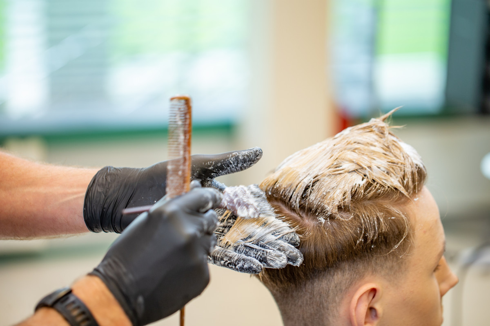
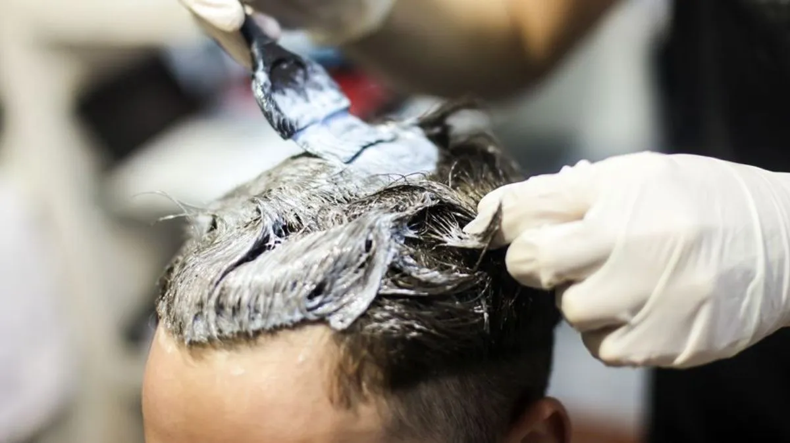

Miért festeti egyre több férfi a haját?
A férfi hajfestés iránti igény az elmúlt években jelentősen megnőtt – és ez nem divathullám, hanem egy tartós változás. Egyre több férfi ismeri fel, hogy néhány jól elhelyezett árnyalat, egy fedett ősz vagy egy finoman kolorizált végeredmény szinte észrevehetetlenül, mégis hatásosan emeli az összképet.
A kulcs a "természetes" szó. A legjobb férfi hajfestés az, amelyiket nem látod meg azonnal – csak azt érzed, hogy valahogy frissebb, élettelibb a haj. Ez a fajta visszafogott, precíz munka az, amit egy profi barber shopban tudnak nyújtani, szemben az otthon felrakott egyszínű festékkel.
A szürke hajszálak lefedése az egyik leggyakoribb ok, amiért férfiak hajfestésre szánják el magukat. De egyre többen kérnek highlights-ot, toning-ot vagy akár teljes kolorizálást is – különösen azok, akik szeretnének egy kicsit merészebb, karakteresebb megjelenést.

Népszerű hajfestési technikák férfiaknak
A férfi hajfestésnek számos iránya van – az igény és a hajtípus alapján teljesen eltérő technikák jöhetnek szóba. Nem minden esetben szükséges teljes festés: sokszor elég egy részleges kezelés is a kívánt hatáshoz.
Szürke lefedés
Az ősz hajszálak természetes árnyalatú lefedése – a leggyakrabban kért férfi hajfestési szolgáltatás. Az eredmény egyenletes és tartós.
Highlights
Néhány szál kiemelése a természetes hajszínhez közel álló, világosabb árnyalattal. Mélységet és mozgást ad a hajnak anélkül, hogy feltűnő lenne.
Toning
A meglévő hajszín finomhangolása – semlegesíti a sárga vagy vöröses tónusokat, és egységesebb, tisztább összhatást ad.
Szakállfestés
A hajjal összehangolt szakállfestés egységes, komplett megjelenést eredményez – különösen hasznos, ha a szakáll korábban őszül, mint a haj.

Otthoni hajfestés vs. profi barber shop – mi a különbség?
Az otthoni hajfestés első ránézésre egyszerűnek és olcsónak tűnik – de az eredmény ritkán olyan, mint amit egy profi szalonban kapsz. A dobozos festékek általában egyszínű, lapos hatást adnak, egyenetlen lefedéssel, és a haj állapota is sínyli meg hosszú távon.
Egy tapasztalt barber a hajfestésnél is ugyanolyan precizitással dolgozik, mint a vágásnál. Figyelembe veszi a haj porozitását, az alaptónust, a növekedési irányt és azt is, hogy milyen végeredményt szeretnél. Az arányok és az árnyalatok finomhangolása az, ami természetessé teszi az eredményt – és ez az, amit otthon nem lehet lemásolni.
- Profi festékek hosszabb ideig tartanak és kíméletesebben hatnak a hajra
- A szín egyenletesen oszlik el – nincs foltos, egyenetlen lefedés
- A barber a hajvágással és a festéssel egyszerre tud dolgozni
- A végeredmény a hajtípushoz és arcformához van igazítva
Hogyan ápold a festett hajat?
A festett haj más odafigyelést igényel, mint a természetes. Néhány egyszerű szokással azonban sokáig megőrizhető az eredeti szín és a haj egészséges állapota.
- Használj festett hajra szánt, szulfátmentes sampont – védi a színt és a hajszerkezetet
- Hidratáló hajpakolás hetente egyszer megőrzi a haj rugalmasságát
- Kerüld a túl forró vízt mosáskor – kimossa a festéket
- UV-védelmet tartalmazó hajápoló termék véd a napkárosodástól
- Rendszeres felújítás – 4–8 hetente, az alkalmazott technikától függően
Miért válaszd a Bosphorust hajfestéshez?
A Bosphorus barber shopban a hajfestés ugyanolyan precizitással és személyes odafigyeléssel történik, mint minden más szolgáltatás. A borbélyok nemcsak a vágásban, hanem a színezési technikákban is jártasak – és pontosan tudják, hogyan kell férfi hajra dolgozni úgy, hogy az eredmény természetes és tartós legyen.
Akár szürke lefedést keresel, akár highlights-ot, toning-ot vagy szakállfestést – a Bosphorus barber shopban minden igényre személyre szabott megoldást kínálnak. A konzultáció mindig az első lépés: a barber meghallgat, javaslatot tesz, és csak utána kezd hozzá a munkához.
- Szürke lefedés, highlights, toning és szakállfestés egy helyen
- Profi festékek – tartós, kíméletes eredmény
- Konzultáció minden alkalommal, vágással kombinálható
- Budapest 7. kerületében, könnyen elérhető helyszínen
Foglalj időpontot hajfestésre Budapesten
Természetes highlights, szürke lefedés vagy szakállfestés – a Bosphorus barber shopban minden hajfestési kezelés profi kezekből, személyre szabva kerül elvégzésre. Foglalj most, és tapasztald meg te is a különbséget.